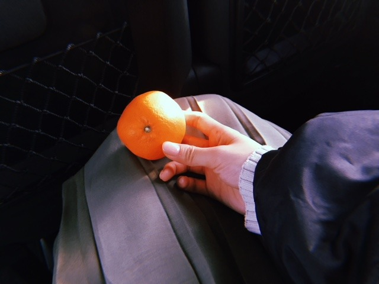
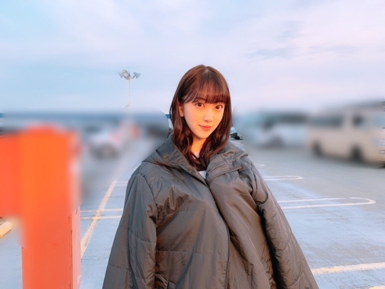
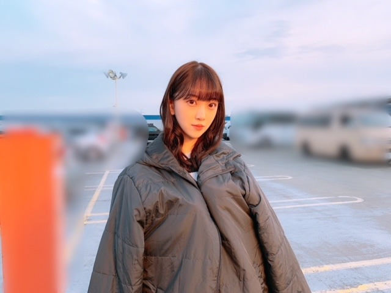
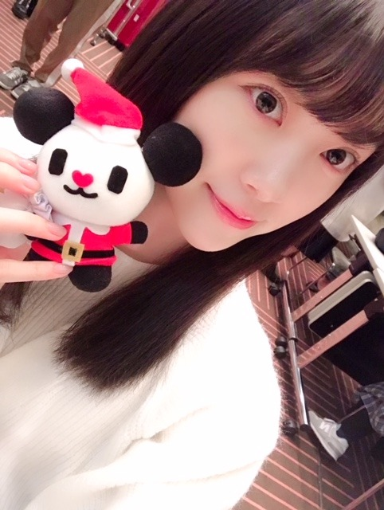
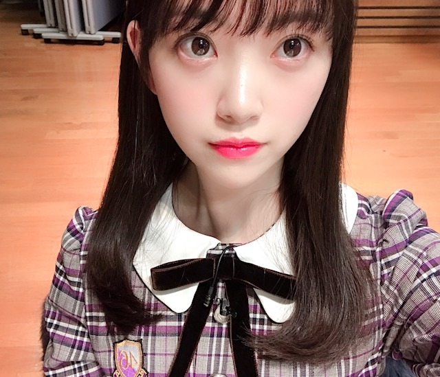

2018/1221Fri甘酸っぱいものとは青春とみかんと金柑と
ジブリ作品が昔から大好きなのですが
"海がきこえる"
密かにすきな作品の1つです
切なくもありもどかしくもあり
あの青々しさと全体的な爽やかさがたまりません
私が思う青春そのものです
青春にファンタジーを足した作品が
耳をすませばだとしたら、
海がきこえるは純青春！
そしてちょっぴり大人で
懐かしさもあるあの感じが良きです
よく見返します
少女の想い
ファーストインプレッションなど
BGMも素敵
いつか 海がきこえる をイメージして
駅や海辺やカフェでの撮影とかしてみたいなぁ

みかんに光が当たるようにしたら
その部分が凹んでみえました
光が強すぎる...でも太陽光だし...
夕日だから強かったのかな


最近は、みかんを食べる機会が増えて
さらに 金柑もよく食べています
皮まるごと食べるのが美味しくて
ぱくぱく食べちゃいます
そして
今日はmステに出させていただきます☺︎

朝、楽屋に入ったら
クリスマス仕様のゴーちゃんが！！
かわいいブイ！！
シンクロニシティと
気づいたら片想いを披露させていただきます
最後まで観てね☺︎
では！

2018/12/21 11:00
コメント(319)
ブログ更新ありがと！
いっつも忙しいのにブログなど更新してくれていてとてもファン思いなみーおな最高です！
1月20日の個別握手会パンダの帽子つけていくからよろしくね！
いっつも忙しいのにブログなど更新してくれていてとてもファン思いなみーおな最高です！
1月20日の個別握手会パンダの帽子つけていくからよろしくね！
ブログ更新ありがと！
いっつも忙しいのにブログなど更新してくれていてとてもファン思いなみーおな最高です！
1月20日の個別握手会パンダの帽子つけていくからよろしくね！
いっつも忙しいのにブログなど更新してくれていてとてもファン思いなみーおな最高です！
1月20日の個別握手会パンダの帽子つけていくからよろしくね！
未央奈！(*´꒳`*)
海がきこえる、実は私もまだ見た事ないのですよ〜。未央奈が好きな作品なら未央奈をもっとよく知りたいから今度見てみる♬
海がきこえるをイメージしての撮影ですか〜 ^ ^ 私も見てみたいよ！フォトブック、写真集にならないかな〜(*´-`) 仮に全然、プロのカメラじゃなくて、製本もお安いやつだったとしてもぜーーーーーーったい買います♬
私は未央奈の全部が大切なので未央奈グッズだけは全部欲しいです〜
みかん凹んでるねー。
デッサンもさ、
意外だけど1番出っ張ってるところにたくさん鉛筆(黒)を乗せて立体感をだしたりするからね〜、そんな感じだね！(*´꒳`*)
このコート着ている写真は何の撮影かな？？
Mステみたよ〜！！！(*´꒳`*)
ってかその前に未央奈！この髪型、髪おろして両耳隠す髪型！！私先日のブログにまさにこの髪型が見たいって書いたの！！！めっちゃ嬉しい♬似合ってるし可愛いよぅ♬
数百件のコメントがあっただろうからたまたまかとは思いますが、未央奈が私のコメント読んで採用してくれた髪型だったのだとしたらもうさらに惚れてしまいます〜(*´ω｀*)
ショートの未央奈は可愛いが先に来る印象があるけど、ロング未央奈は綺麗が先に来る印象があるね！！
クリスマスゴーちゃんは貰えたの？？楽屋飾りかな？？それにしてもクリスマスか〜。未央奈に届いてるかなぁ？？(秘密)
未央奈に次直接会えるのは個別握手会。それまでに色々用意しなきゃ！！(*´-`)
ではまたね！！
海がきこえる、実は私もまだ見た事ないのですよ〜。未央奈が好きな作品なら未央奈をもっとよく知りたいから今度見てみる♬
海がきこえるをイメージしての撮影ですか〜 ^ ^ 私も見てみたいよ！フォトブック、写真集にならないかな〜(*´-`) 仮に全然、プロのカメラじゃなくて、製本もお安いやつだったとしてもぜーーーーーーったい買います♬
私は未央奈の全部が大切なので未央奈グッズだけは全部欲しいです〜
みかん凹んでるねー。
デッサンもさ、
意外だけど1番出っ張ってるところにたくさん鉛筆(黒)を乗せて立体感をだしたりするからね〜、そんな感じだね！(*´꒳`*)
このコート着ている写真は何の撮影かな？？
Mステみたよ〜！！！(*´꒳`*)
ってかその前に未央奈！この髪型、髪おろして両耳隠す髪型！！私先日のブログにまさにこの髪型が見たいって書いたの！！！めっちゃ嬉しい♬似合ってるし可愛いよぅ♬
数百件のコメントがあっただろうからたまたまかとは思いますが、未央奈が私のコメント読んで採用してくれた髪型だったのだとしたらもうさらに惚れてしまいます〜(*´ω｀*)
ショートの未央奈は可愛いが先に来る印象があるけど、ロング未央奈は綺麗が先に来る印象があるね！！
クリスマスゴーちゃんは貰えたの？？楽屋飾りかな？？それにしてもクリスマスか〜。未央奈に届いてるかなぁ？？(秘密)
未央奈に次直接会えるのは個別握手会。それまでに色々用意しなきゃ！！(*´-`)
ではまたね！！
堀ちゃん、大好きだよー
みかんといえば、未央奈は未完の大器だと思う。
勿論現時点でもアイドルとして成功してるんだけど、
まだまだ大きくなれる、なって有名になって欲しいと思う。
勿論現時点でもアイドルとして成功してるんだけど、
まだまだ大きくなれる、なって有名になって欲しいと思う。
堀ちゃんMステお疲れ様！
録画して何回も見てるよー✨
いつまでも応援してるよ
ちなみに（五兵衛もち）食べたいなぁ
では、またねー ʕ•ٹ•ʔ
録画して何回も見てるよー✨
いつまでも応援してるよ
ちなみに（五兵衛もち）食べたいなぁ
では、またねー ʕ•ٹ•ʔ
クレームブリュレ
堀ちゃんのポニーテールが1番好き♡
Mステ見たよーー、ー、
今年はあと紅白で締めですね
ブログ更新ありがとう！
みかんの季節になりましたね～寒い。。
体には気をつけて頑張ってください！
みかんの季節になりましたね～寒い。。
体には気をつけて頑張ってください！
みおな

「ポジションは関係なく、どこにいても輝ける人になるのが目標」と755で伝えてくれた件についてですが、私はその目標はとうに未央奈ちゃんはクリアしていると思っています。それも２年前に。
「ハルジオン」で３作ぶりに選抜に復帰した時には、そりゃそうでしょ、当然でしょという思いが強かったです。実は、「インフル」でフロントに戻った時も、嬉しさと同じくらいに、当然でしょとも思いました。何故なら、「サヨナラに強くなれ」で飛鳥ちゃんと２列目のダブルセンターになっていた期間の未央奈ちゃんの輝きが半端じゃなかったからで、これで次フロントにならなかったら選抜の決め方を疑う所でした。今でも「サヨナラ」のＭＶを観ると、あの時の興奮が甦ります。
その後、フロントを張り続けてくれながらも、今作では２列目のポジションになり、悔しく無いと言えばウソになりますが、ブログで前を向くのみと改めて決意を語ってくれていたので、未央奈ちゃんは大丈夫だと、私達ファンも、変わらず応援するのみと決意出来たと思います。
そしてそんな未央奈ちゃんの決意を形として見せてくれたのが、先日のＦＮＳでのユニット曲「必然性」での未央奈ちゃんのパフォーマンスでした。あの時の未央奈ちゃんは本当に凄かったですよ。あの面々の中で飛び抜けて輝くのは並大抵のことでは出来ないと思いますが、それをやってのけたのですから、未央奈ちゃんは未央奈ちゃん自身が思う以上に、輝きを身につけているし、進化していると感じますし、「サヨナラ」以来の、いえ、あの時以上の興奮をいただきました。
更に、Ｍステでも感じましたが、どうやら未央奈ちゃんの顔つきがまた変わってきたと思います。何故そう感じるのか考えたところ、おそらく映画を撮影していた１ヶ月が大きかったのではないでしょうか。その期間、日々葛藤と格闘の毎日だったとインタビューで答えていたそのことが、未央奈ちゃんのパフォーマンスに新しい力強さと魅力的な表現力になって現れているのかなと思います。
その主演映画が、だからこそ楽しみになってきました。いろんな想いを糧にして前進し、我々ファンがまだ知らない新しい未央奈ちゃんに会える喜びをくれることに感謝しています。未央奈ちゃんのファンでいられる幸せを噛みしめて、今年も１年ありがとうございました。あともう少し、楽しみましょう。
長々とごめんなさい。
「ハルジオン」で３作ぶりに選抜に復帰した時には、そりゃそうでしょ、当然でしょという思いが強かったです。実は、「インフル」でフロントに戻った時も、嬉しさと同じくらいに、当然でしょとも思いました。何故なら、「サヨナラに強くなれ」で飛鳥ちゃんと２列目のダブルセンターになっていた期間の未央奈ちゃんの輝きが半端じゃなかったからで、これで次フロントにならなかったら選抜の決め方を疑う所でした。今でも「サヨナラ」のＭＶを観ると、あの時の興奮が甦ります。
その後、フロントを張り続けてくれながらも、今作では２列目のポジションになり、悔しく無いと言えばウソになりますが、ブログで前を向くのみと改めて決意を語ってくれていたので、未央奈ちゃんは大丈夫だと、私達ファンも、変わらず応援するのみと決意出来たと思います。
そしてそんな未央奈ちゃんの決意を形として見せてくれたのが、先日のＦＮＳでのユニット曲「必然性」での未央奈ちゃんのパフォーマンスでした。あの時の未央奈ちゃんは本当に凄かったですよ。あの面々の中で飛び抜けて輝くのは並大抵のことでは出来ないと思いますが、それをやってのけたのですから、未央奈ちゃんは未央奈ちゃん自身が思う以上に、輝きを身につけているし、進化していると感じますし、「サヨナラ」以来の、いえ、あの時以上の興奮をいただきました。
更に、Ｍステでも感じましたが、どうやら未央奈ちゃんの顔つきがまた変わってきたと思います。何故そう感じるのか考えたところ、おそらく映画を撮影していた１ヶ月が大きかったのではないでしょうか。その期間、日々葛藤と格闘の毎日だったとインタビューで答えていたそのことが、未央奈ちゃんのパフォーマンスに新しい力強さと魅力的な表現力になって現れているのかなと思います。
その主演映画が、だからこそ楽しみになってきました。いろんな想いを糧にして前進し、我々ファンがまだ知らない新しい未央奈ちゃんに会える喜びをくれることに感謝しています。未央奈ちゃんのファンでいられる幸せを噛みしめて、今年も１年ありがとうございました。あともう少し、楽しみましょう。
長々とごめんなさい。
みおなぁーーーー
だいすきーーーー
だいすきーーーー
海がきこえるはまだ観たことがないので、今度観ますね
Mステ観ました。
やっぱり堀ちゃんのパフォーマンス良いです。好きですね
Mステ観ました。
やっぱり堀ちゃんのパフォーマンス良いです。好きですね
堀さん、こんばんは♪
今回のブログの写真は5枚目が好きです。
ミュージックステーションを見ました。
気づいたら片想いは見逃してしまいました。
気づいたら片想いを 久しぶりに聴きたくなりました。
このあとYouTubeで聴きます。
乃木坂の曲はバラードも好きです♪
今話したい誰かがいる
の １人でいるのが1番楽だった。誰かと一緒にいると
僕は僕じゃない という部分が好きです♪
古見さんはコミュ症です の11巻を買いました。
ではまたコメントしますね☆
今回のブログの写真は5枚目が好きです。
ミュージックステーションを見ました。
気づいたら片想いは見逃してしまいました。
気づいたら片想いを 久しぶりに聴きたくなりました。
このあとYouTubeで聴きます。
乃木坂の曲はバラードも好きです♪
今話したい誰かがいる
の １人でいるのが1番楽だった。誰かと一緒にいると
僕は僕じゃない という部分が好きです♪
古見さんはコミュ症です の11巻を買いました。
ではまたコメントしますね☆
堀ちゃんこんばんは！
最初に私ごとですが、先週堀ちゃんの握手会に初めて参加させていただきました！( ´ ▽ ` )
初めて近くで見た堀ちゃんの可愛さに驚愕でした、ほんとにこんなに可愛い人がこの世にいるんですね…！
声まで聞けてたら失神しかねなかったので、逆によかったです笑
堀ちゃんの声も大好きなので、次回の楽しみにしておきますね！( ´ ▽ ` )
ありきたりな拙い僕の言葉を頷きながら聞いてくれた堀ちゃん、トキメキ止まらずもっともっと好きになりました(o^^o)
緊張しすぎて上手く喋れなかった僕のメンタルの弱さが唯一惜しまれるところです( ´ 〜 ` )笑
本当にありがとうございました！また年明けの大阪に行かせてもらいます！
そして昨日のmステスーパーライブも見させていただきました！お疲れ様でした！
言わずもがなでめちゃめちゃ可愛かったですー！眩しいほどに輝いてました！！( ´ ▽ ` )
堀ちゃんのダンスに毎回ほんとに魅せられてます、昨日は特に腕の動きがしなやかで綺麗で、ずっと目を奪われるぐらい魅力的でした！
好きな人がいつも素敵すぎて幸せです(o^^o)♩
疲れたときとかキツいことがあっても、堀ちゃんの姿やパフォーマンスを見ると自然と笑顔になって癒されて、頑張るかっていう気分になれてます( ´ ー ` )
いつも本当にありがとうございます( ´ ▽ ` )
これからもずっと好きです、ずっと応援させてください(o^^o)
年末でテレビなどなど、どんどん忙しくなっていると思いますが、お身体ご自愛くださいね！
今年の最後まで堀ちゃんが納得する一年でありますように(o^^o)
ではでは、またコメントさせてください！
みかんいっぱい食べてくださいー！笑
最初に私ごとですが、先週堀ちゃんの握手会に初めて参加させていただきました！( ´ ▽ ` )
初めて近くで見た堀ちゃんの可愛さに驚愕でした、ほんとにこんなに可愛い人がこの世にいるんですね…！
声まで聞けてたら失神しかねなかったので、逆によかったです笑
堀ちゃんの声も大好きなので、次回の楽しみにしておきますね！( ´ ▽ ` )
ありきたりな拙い僕の言葉を頷きながら聞いてくれた堀ちゃん、トキメキ止まらずもっともっと好きになりました(o^^o)
緊張しすぎて上手く喋れなかった僕のメンタルの弱さが唯一惜しまれるところです( ´ 〜 ` )笑
本当にありがとうございました！また年明けの大阪に行かせてもらいます！
そして昨日のmステスーパーライブも見させていただきました！お疲れ様でした！
言わずもがなでめちゃめちゃ可愛かったですー！眩しいほどに輝いてました！！( ´ ▽ ` )
堀ちゃんのダンスに毎回ほんとに魅せられてます、昨日は特に腕の動きがしなやかで綺麗で、ずっと目を奪われるぐらい魅力的でした！
好きな人がいつも素敵すぎて幸せです(o^^o)♩
疲れたときとかキツいことがあっても、堀ちゃんの姿やパフォーマンスを見ると自然と笑顔になって癒されて、頑張るかっていう気分になれてます( ´ ー ` )
いつも本当にありがとうございます( ´ ▽ ` )
これからもずっと好きです、ずっと応援させてください(o^^o)
年末でテレビなどなど、どんどん忙しくなっていると思いますが、お身体ご自愛くださいね！
今年の最後まで堀ちゃんが納得する一年でありますように(o^^o)
ではでは、またコメントさせてください！
みかんいっぱい食べてくださいー！笑
日々新しい事に挑戦している未央奈さんですが、ふとした瞬間に立ち返る事ができる、原点とも言える作品があるのは、素敵だと思います！
僕は最近新しい事に挑戦して濃い日々を過ごしていますが、こんな時こそ睡眠って大事で、幸せな時間だなあと感じています。
未央奈さんも、健康にはお気をつけください！
僕は最近新しい事に挑戦して濃い日々を過ごしていますが、こんな時こそ睡眠って大事で、幸せな時間だなあと感じています。
未央奈さんも、健康にはお気をつけください！
こんばんは
食事の後とか、みかん食べると
口の中がスッキリしますよね～♪
Mステとってもステキでした！！
トーク時でも前列に居て嬉しかったです♡
シンクロニシティではイルミネーションが、
キラキラと踊っているみたいでしたよー♡
気付いたら片想いでは当時の雰囲気や、
空気感を想い出して感傷的になりました☆
そして、
どちらの衣装もイメージに合ってました☆
みおちゃんは後ろ向きになっても、、
ポニーテールがゆらゆらしてカワウイね～☺
食事の後とか、みかん食べると
口の中がスッキリしますよね～♪
Mステとってもステキでした！！
トーク時でも前列に居て嬉しかったです♡
シンクロニシティではイルミネーションが、
キラキラと踊っているみたいでしたよー♡
気付いたら片想いでは当時の雰囲気や、
空気感を想い出して感傷的になりました☆
そして、
どちらの衣装もイメージに合ってました☆
みおちゃんは後ろ向きになっても、、
ポニーテールがゆらゆらしてカワウイね～☺
未央奈ちゃんブログ更新ありがとう！
最後の写真めっちゃ可愛い！
最後の写真めっちゃ可愛い！
未央奈可愛かったよ〜！
体調には十分注意してね！！みかんは良いらしい～＾＾
こんばんは。セブンやよ(ฅ'ω'ฅ)♪
今日も1日お疲れ様でした
今日はみり愛と一緒だったんだね
2人の仲良しな感じ好きよ(^-^)
2人でshowroomやってほしいわ
明日は全握だね
未央奈はもうずっとソロレーンだから無理だけど、みり愛と組んでほしいわ〜
絶対楽しいもん
では、明日握手会楽しもーd(@^∇ﾟ)/ﾌｧｲﾄｯ♪
おやすみおな☪️
今日も1日お疲れ様でした
今日はみり愛と一緒だったんだね
2人の仲良しな感じ好きよ(^-^)
2人でshowroomやってほしいわ
明日は全握だね
未央奈はもうずっとソロレーンだから無理だけど、みり愛と組んでほしいわ〜
絶対楽しいもん
では、明日握手会楽しもーd(@^∇ﾟ)/ﾌｧｲﾄｯ♪
おやすみおな☪️
みかんを写真に撮るところが、芸術家ですね、堀さんの発想は、さすがです。映画の評論も、わかりやすくて、とても、おもしろいです。あと、ミュージックステーション観ました。やっぱり堀さんが一番カッコよかったです。どんなアーティストよりも堀さんのほうが魅力的で一番素敵でした。堀さんは誰にも負けてなかったです。明日の握手会行く予定です。堀さんを見れたら幸せです。
みおなちゃん更新ありがとう╰(*´︶`*)╯♡
ジブリ作品は同じく好きです（╹◡╹）♡
青春を感じられたりしてそこも素敵ですよね(*´꒳`*)
みかんを食べる機会が増えてるんだねー
美味しい時期でもあるからね٩(๑❛ᴗ❛๑)۶
Mステお疲れ様でした٩(^‿^)۶
リアルタイムで観れました(*´-`)
やっぱり良き曲ですね･:*+.\(( °ω° ))/.:+
ジブリ作品は同じく好きです（╹◡╹）♡
青春を感じられたりしてそこも素敵ですよね(*´꒳`*)
みかんを食べる機会が増えてるんだねー
美味しい時期でもあるからね٩(๑❛ᴗ❛๑)۶
Mステお疲れ様でした٩(^‿^)۶
リアルタイムで観れました(*´-`)
やっぱり良き曲ですね･:*+.\(( °ω° ))/.:+
きのう１１時過ぎにコメント投稿したんですけれど入れ違いでブログ投稿してくださっていたんですね。
みかん，大好きです。いつも爪が黄色くなるまで食べますよ
ジブリ作品，あまり見てこなくて，なかなか世間の話について行けないのがつらいです。
『海がきこえる』，おもしろそうですね。今度観てみますね
ゴーちゃんかわいいですね
ちなみに家にブーブとブーナ（，それとトラッキー）がいます。
いい年してバカみたいですけど。まあ上京するときに持ってきて，今はほこりがかぶりつつあって申し訳ないなと思っています。
楽屋入りって朝なんですか。
リハーサルとかは当日にやるんですかね。
まあいろいろ気になるけど，気にしたところでしょうがないって感じですね。
いつもありがとうございます。
みかん，大好きです。いつも爪が黄色くなるまで食べますよ
ジブリ作品，あまり見てこなくて，なかなか世間の話について行けないのがつらいです。
『海がきこえる』，おもしろそうですね。今度観てみますね
ゴーちゃんかわいいですね
ちなみに家にブーブとブーナ（，それとトラッキー）がいます。
いい年してバカみたいですけど。まあ上京するときに持ってきて，今はほこりがかぶりつつあって申し訳ないなと思っています。
楽屋入りって朝なんですか。
リハーサルとかは当日にやるんですかね。
まあいろいろ気になるけど，気にしたところでしょうがないって感じですね。
いつもありがとうございます。
海がきこえる って作品は初めて知った！！
今度見てみよ〜
風邪ひかないように気をつけて頑張ってください☺️
今度見てみよ〜
風邪ひかないように気をつけて頑張ってください☺️
ブログ更新ありがとう〜
mステ最高だったよ♪
ドアップであんなに可愛いのはすごい…w
そして、色白だから天使みたいにも見えた！
mステ最高だったよ♪
ドアップであんなに可愛いのはすごい…w
そして、色白だから天使みたいにも見えた！
甘酸っぱいものと
言えばみかんだよね～？
みかんは温めると更に
美味しくなるらしいよ？
だから絶対あっためた方がいいよ？
絶対あっためた方がいいんだからね？
絶対に絶対にあっためた方がいいよ？
あっ…甘酸っぱいっていうか
口酸っぱく言っちゃってごめんなさい
言えばみかんだよね～？
みかんは温めると更に
美味しくなるらしいよ？
だから絶対あっためた方がいいよ？
絶対あっためた方がいいんだからね？
絶対に絶対にあっためた方がいいよ？
あっ…甘酸っぱいっていうか
口酸っぱく言っちゃってごめんなさい
ねむねむ堀殿♡みりりんぬ♡よきよきピーナッツでばいころまるロンo(^-^o)(o^-^)oロンo(^-^o)(o^-^)oロン
おはよう、みおな❗️❗️(笑)
昨日は、年末１番の忙しさ・・・
コメント送れなくてゴメンね❗️(笑)
今日はお休みなので、朝からMステ、ヘビロテ❗️(笑)
今回はポニーテール・・・
うん、何回見ても、かわいいものはかわいい❗️❗️(笑)
それに、少し痩せた❓️
なんとなくね・・・
シルエットが細く見えたから・・・
先日の体調不良で、体重落ちちゃったのかな、なんて・・・
でも、パフォーマンスは、ナイスだったね❗️(笑)
シンクロニシティ、しっかり動けてたと思う❗️
力みもなく、自然に、でも、遅れることなく・・・
気づいたら片想いも、サビのフリとか、キレのある動きで・・・
それにしても、久しぶりにみおなのフロントでのパフォーマンス・・・
みおなも、改めて、自分の立つべき場所、認識したんじゃない❓️
755でも、自分の思い入れの強さを語ってくれてたよね・・・
気持ちの入り方も違うと思う・・・
今回のパフォーマンスを見て感じたことは、フロントへのこだわり・・・
現状に対する悔しさ・・・
色んな感情を、思い浮かべながらのパフォーマンス、だったのかな、と・・・
でも、みおなは、挫折のあと、必ず這い上がってくることのできる女の子だから・・・
今後の成長に、必要な経験だったな、と、後々、思えるような、頑張りを期待しています❗️❗️
まぁ、俺もそばにいるから、大丈夫っしょ❗️❗️(笑)
みおな、ここからだよ❗️❗️(笑)
上がってくだけだから❗️❗️(笑)
今日は、インテックス大阪行けないけど、今日のパフォーマンスは、３月の全国握手会の時に、プロジェクトレビューンで手に入れるからね❗️(笑)
海原ウインク、楽しみにしています❗️❗️(笑)
かわいく決めてくれよ❗️❗️(笑)
それじゃ、またね❗️❗️(笑)
先週のこともあり、体調もまだまだ万全ではないと思う・・・
大阪も、かなり寒いだろうし・・・
たくさんのファン、来てくれると思うけど、みおな自身の体調を最優先で頼むよ❗️❗️
もし、先週のようなことになったとしても、みんな理解してくれるから大丈夫だよ❗️❗️
とにかく、マスクと、のど飴、適度な休憩を入れながらね・・・
昨日は、年末１番の忙しさ・・・
コメント送れなくてゴメンね❗️(笑)
今日はお休みなので、朝からMステ、ヘビロテ❗️(笑)
今回はポニーテール・・・
うん、何回見ても、かわいいものはかわいい❗️❗️(笑)
それに、少し痩せた❓️
なんとなくね・・・
シルエットが細く見えたから・・・
先日の体調不良で、体重落ちちゃったのかな、なんて・・・
でも、パフォーマンスは、ナイスだったね❗️(笑)
シンクロニシティ、しっかり動けてたと思う❗️
力みもなく、自然に、でも、遅れることなく・・・
気づいたら片想いも、サビのフリとか、キレのある動きで・・・
それにしても、久しぶりにみおなのフロントでのパフォーマンス・・・
みおなも、改めて、自分の立つべき場所、認識したんじゃない❓️
755でも、自分の思い入れの強さを語ってくれてたよね・・・
気持ちの入り方も違うと思う・・・
今回のパフォーマンスを見て感じたことは、フロントへのこだわり・・・
現状に対する悔しさ・・・
色んな感情を、思い浮かべながらのパフォーマンス、だったのかな、と・・・
でも、みおなは、挫折のあと、必ず這い上がってくることのできる女の子だから・・・
今後の成長に、必要な経験だったな、と、後々、思えるような、頑張りを期待しています❗️❗️
まぁ、俺もそばにいるから、大丈夫っしょ❗️❗️(笑)
みおな、ここからだよ❗️❗️(笑)
上がってくだけだから❗️❗️(笑)
今日は、インテックス大阪行けないけど、今日のパフォーマンスは、３月の全国握手会の時に、プロジェクトレビューンで手に入れるからね❗️(笑)
海原ウインク、楽しみにしています❗️❗️(笑)
かわいく決めてくれよ❗️❗️(笑)
それじゃ、またね❗️❗️(笑)
先週のこともあり、体調もまだまだ万全ではないと思う・・・
大阪も、かなり寒いだろうし・・・
たくさんのファン、来てくれると思うけど、みおな自身の体調を最優先で頼むよ❗️❗️
もし、先週のようなことになったとしても、みんな理解してくれるから大丈夫だよ❗️❗️
とにかく、マスクと、のど飴、適度な休憩を入れながらね・・・
Mステ見ました꒰ᐢ⸝⸝•༝•⸝⸝ᐢ꒱
とっても可愛かったです！茶髪ロングのみおなちゃん大好きです、でもポニーテールしてるのも可愛くて好きです！
とっても可愛かったです！茶髪ロングのみおなちゃん大好きです、でもポニーテールしてるのも可愛くて好きです！
みおなちゃんへ
ブログ更新ありがとう！！☺︎
写真、むっちゃかわいい
Mステ楽しみにしてたんだ〜
パフォーマンス最高でした✨
今日のおしゃれイズムも見ます！
また、メイク系のブログ待ってます
だいすき
くるみるより！！
ブログ更新ありがとう！！☺︎
写真、むっちゃかわいい
Mステ楽しみにしてたんだ〜
パフォーマンス最高でした✨
今日のおしゃれイズムも見ます！
また、メイク系のブログ待ってます
だいすき
くるみるより！！
海がきこえる
一番好きな作品！
嬉しいです！^ ^
一番好きな作品！
嬉しいです！^ ^
未央奈ちゃんこんばんは‼ありがとうございます！頑張ります‼頑張って下さい。ありがとうございます！頑張ります‼
未央奈ちゃん、ひろっしーです！コメント投稿547回目です！
前回はブログ「6月28日全国ロードショー」にブログの感想を書きました！
時間→「No.373 2018年12月20日 01:30」
ブログ更新ありがとうございます！
4、5枚目の髪を束ねてないのも可愛いな～！
「Mステスーパーライブ」お疲れ様でした！
〇1曲目「シンクロニシティ」
・パステルカラーの衣装が凄く綺麗で、久々に
パフォーマンスを観て今年のシングルなのに
懐かしく感じました！
〇2曲目「気づいたら片想い」
・初出演で披露した曲をなぁちゃんのラストで
パフォーマンス出来て+久々にきいちゃんが
出演されていて凄く嬉しかったです！
・とても長いイヤリングお似合いでした！
・歌っている時の切ない表情も素敵でした！
755に書いてあった言葉にグッと来ました！
〇カメラに映る事の有難さについて
・トップアイドルになった今でも初心を忘れず
パフォーマンスされていて感心しました！
・今回も勿論可愛かったし、束ねた髪が動いて
なびく感じも綺麗でした！
〇「ポジションは関係なくどこにいても輝ける
人になる」という目標について
・素晴らしい目標だと思いますし、こちらこそ
恩返しどころか感謝しっぱなしです！
・いつも支えて下さりありがとうございます！
・僕なりに全力で応援させて頂きます！
・これからも人が喜ぶ、笑顔になるアイドルと
いう素晴らしい職業を楽しんで下さいね！
ほとんど「Mステ」と755の感想でした(謝)
最後に今日の「おしゃれイズム」観ますね(楽)
ここまで読んで頂きありがとうございました！
毎日お仕事お疲れ様です！体調にはくれぐれも気を付けて頑張ってくださいね！
おやすみおな～！
前回はブログ「6月28日全国ロードショー」にブログの感想を書きました！
時間→「No.373 2018年12月20日 01:30」
ブログ更新ありがとうございます！
4、5枚目の髪を束ねてないのも可愛いな～！
「Mステスーパーライブ」お疲れ様でした！
〇1曲目「シンクロニシティ」
・パステルカラーの衣装が凄く綺麗で、久々に
パフォーマンスを観て今年のシングルなのに
懐かしく感じました！
〇2曲目「気づいたら片想い」
・初出演で披露した曲をなぁちゃんのラストで
パフォーマンス出来て+久々にきいちゃんが
出演されていて凄く嬉しかったです！
・とても長いイヤリングお似合いでした！
・歌っている時の切ない表情も素敵でした！
755に書いてあった言葉にグッと来ました！
〇カメラに映る事の有難さについて
・トップアイドルになった今でも初心を忘れず
パフォーマンスされていて感心しました！
・今回も勿論可愛かったし、束ねた髪が動いて
なびく感じも綺麗でした！
〇「ポジションは関係なくどこにいても輝ける
人になる」という目標について
・素晴らしい目標だと思いますし、こちらこそ
恩返しどころか感謝しっぱなしです！
・いつも支えて下さりありがとうございます！
・僕なりに全力で応援させて頂きます！
・これからも人が喜ぶ、笑顔になるアイドルと
いう素晴らしい職業を楽しんで下さいね！
ほとんど「Mステ」と755の感想でした(謝)
最後に今日の「おしゃれイズム」観ますね(楽)
ここまで読んで頂きありがとうございました！
毎日お仕事お疲れ様です！体調にはくれぐれも気を付けて頑張ってくださいね！
おやすみおな～！
セミロング、とても似合ってて可愛いです♡
年末忙しいと思うけど、体調には気をつけて、、！
年末忙しいと思うけど、体調には気をつけて、、！
朴葉味噌，朴葉寿司……
おいしいですよねー
なんかうれしいです。
おいしいですよねー
なんかうれしいです。
メリークリスマス〜イブ〜！✨
未央奈！こんばんは。
いろんな方の握手会のレポを見て笑ってる1015です♪
甘酸っぱいものとは青春とみかんと金柑と。。
いい表現。詩人か！笑
海がきこえる。
おぉ！未央奈の思う青春そのものなのか！
耳をすませば大好き。
純青春！こっちも見返してみよっかな♪
BGMもチェックするね！！
みかん。
実はこっちの親戚がみかんを栽培していて毎年冬になると家族で手伝ってるんだぁ。
いいでしょ〜？収穫するときみかん食べ放題よ。笑
まぁ猫の手も借りたいぐらい(猫には収穫はできないけども)忙しいんだけど未央奈みたいにみかん好き！って言ってくれる人がいるからがんばれる〜！これぞ推しメンパワー✨笑
mステ！☺︎
ゴーちゃんきたぁー！
未央奈もかわいいブイ。
衣装も髪型も超かわいかったー！！
シンクロニシティも気づいたら片想いも素晴らしく良かったよ〜〜✌️
初雪まだかなぁ。
今年はホワイトクリスマスになるかな〜？
仲良しでニコニコしてるカップル見るとこっちまでほっこりするのなんでだろ。笑
あ！755の返信ありがとっ。超嬉しい！！！
未央奈がニコニコしてるの見るとほっこりするのは好きだからなんだろうね〜
では！今日もお疲れ様。
おやすみ〜〜(^-^)
未央奈！こんばんは。
いろんな方の握手会のレポを見て笑ってる1015です♪
甘酸っぱいものとは青春とみかんと金柑と。。
いい表現。詩人か！笑
海がきこえる。
おぉ！未央奈の思う青春そのものなのか！
耳をすませば大好き。
純青春！こっちも見返してみよっかな♪
BGMもチェックするね！！
みかん。
実はこっちの親戚がみかんを栽培していて毎年冬になると家族で手伝ってるんだぁ。
いいでしょ〜？収穫するときみかん食べ放題よ。笑
まぁ猫の手も借りたいぐらい(猫には収穫はできないけども)忙しいんだけど未央奈みたいにみかん好き！って言ってくれる人がいるからがんばれる〜！これぞ推しメンパワー✨笑
mステ！☺︎
ゴーちゃんきたぁー！
未央奈もかわいいブイ。
衣装も髪型も超かわいかったー！！
シンクロニシティも気づいたら片想いも素晴らしく良かったよ〜〜✌️
初雪まだかなぁ。
今年はホワイトクリスマスになるかな〜？
仲良しでニコニコしてるカップル見るとこっちまでほっこりするのなんでだろ。笑
あ！755の返信ありがとっ。超嬉しい！！！
未央奈がニコニコしてるの見るとほっこりするのは好きだからなんだろうね〜
では！今日もお疲れ様。
おやすみ〜〜(^-^)
若様の指名がなければ
箸くんは若様で封印されちゃうからね
誰も出来なくなっちゃうからだよ。
指名が合ったから堀ちゃんのセンスで
好きなように是非継承して下さいませ。
堀ちゃんの面白い部分をいっぱい魅せて。
箸くんは若様で封印されちゃうからね
誰も出来なくなっちゃうからだよ。
指名が合ったから堀ちゃんのセンスで
好きなように是非継承して下さいませ。
堀ちゃんの面白い部分をいっぱい魅せて。
３月の全握楽しみにしてます！
靴素敵ですね！！
靴素敵ですね！！
堀さん、こんばんは。
おしゃれイズムと乃木坂工事中見ました。
木切り倒すなんて滅多にない経験ですね。倒れるときの振動すごかったりしたんでしょうか。スタイルがいい、とは言われ慣れてるかもしれませんけど、木切るときのスタイルもいいんですね。鍋の味の感想も的確で、トリッキーじゃないことを言う役回りもできるんだなと感心しました。
それで、継承おめでとうございます。後継者発表のとき「これで、もし堀未央奈が選ばれたら”あんたは大丈夫”が伏線だったことになるなあ」なんて思いながら見てたら案の定でした。
でもきっと卒業セレモニーでボーダーを選んだのと同じように、これからの乃木坂工事中を２期生代表として堀さんに託したという真面目な理由も恐らく本当に有ったんだと思います。なのでバトンでもある箸を相続放棄せずに堀さんが受け取ったことは乃木坂にとって大事なことだったと思います。
あとモバメ見ました。元気出て良かったですね。そういえば先日「芸能人モヤモヤ事件簿」ってテレビ番組で須田亜香里さんの握手に来なくなったファンの消息を辿るってのをやってて、アイドルが見たら感動して泣くんだろうなって内容でした。tverで見れるのでお勧めです。
おしゃれイズムと乃木坂工事中見ました。
木切り倒すなんて滅多にない経験ですね。倒れるときの振動すごかったりしたんでしょうか。スタイルがいい、とは言われ慣れてるかもしれませんけど、木切るときのスタイルもいいんですね。鍋の味の感想も的確で、トリッキーじゃないことを言う役回りもできるんだなと感心しました。
それで、継承おめでとうございます。後継者発表のとき「これで、もし堀未央奈が選ばれたら”あんたは大丈夫”が伏線だったことになるなあ」なんて思いながら見てたら案の定でした。
でもきっと卒業セレモニーでボーダーを選んだのと同じように、これからの乃木坂工事中を２期生代表として堀さんに託したという真面目な理由も恐らく本当に有ったんだと思います。なのでバトンでもある箸を相続放棄せずに堀さんが受け取ったことは乃木坂にとって大事なことだったと思います。
あとモバメ見ました。元気出て良かったですね。そういえば先日「芸能人モヤモヤ事件簿」ってテレビ番組で須田亜香里さんの握手に来なくなったファンの消息を辿るってのをやってて、アイドルが見たら感動して泣くんだろうなって内容でした。tverで見れるのでお勧めです。
未央ちゃん箸くん二代目のネタについてなんだけど１つ考えがありまして「箸くん、箸くん、この前から姿が見えないけどどこにいるのさー、それはね、おてもとさー(と言っておてもととかいたはしの袋を出す)的なのどうですかwwwwwもし考えるのに迷ったらいろいろvocabularyを集めるためにショールームでファンの人にいろいろ案を練ってもらってきっかけを得るのも１つありだと思いますよ〜〜
好きだよ
おはようございます！！
２代目箸君おめでとうございます
若様がステージに置いた箸君が
どうなるのかずっと気になってましたが
無事新たな主を得ました
その場で披露できるポテンシャル
メンバーの中でもそうはいないと思います
とても楽しみです
２代目箸君おめでとうございます
若様がステージに置いた箸君が
どうなるのかずっと気になってましたが
無事新たな主を得ました
その場で披露できるポテンシャル
メンバーの中でもそうはいないと思います
とても楽しみです
おしゃれイズム観ました。堀殿♡発見ﾜﾝ (･x･U)≡≡≡３クリスマスマーケット♡もみの木♡獅子鍋♡溶接♡江の島イルミネーション♡同じ話♡日本の〇まなったん♡トークよきよきピーナッツヾ(=ﾟ･ﾟ=)ﾉﾆｬﾝ♪
乃木坂工事中♡友と刀の寸劇♡二代目箸くん堀殿おめおめペロ♡ハルジオンが咲く頃♡堀殿の演技よきよきピーナッツでばいころまるロンo(^-^o)(o^-^)oロンo(^-^o)(o^-^)oロン
乃木坂工事中♡友と刀の寸劇♡二代目箸くん堀殿おめおめペロ♡ハルジオンが咲く頃♡堀殿の演技よきよきピーナッツでばいころまるロンo(^-^o)(o^-^)oロンo(^-^o)(o^-^)oロン
未央ちゃんメリクリイブ
昨日は大阪全握楽しかったよ(o^^o)
乃木中見たよ
2代目箸くん頑張って
今夜CDTVスペシャル！クリスマス音楽祭見るね(o^^o)
斉藤貴巳
昨日は大阪全握楽しかったよ(o^^o)
乃木中見たよ
2代目箸くん頑張って
今夜CDTVスペシャル！クリスマス音楽祭見るね(o^^o)
斉藤貴巳
こんにちは～
、、今日も、よく晴れたね～
、、甘酢、、じゃあない、、(笑)甘酸っぱいものは、、
、、みかんと、、金柑と、、私、、ってことだね～
、、今日は、、クリスマスイブ、、三田さんに、、(笑)よろしく～
、、今日も、よく晴れたね～
、、甘酢、、じゃあない、、(笑)甘酸っぱいものは、、
、、みかんと、、金柑と、、私、、ってことだね～
、、今日は、、クリスマスイブ、、三田さんに、、(笑)よろしく～
未央奈もーにん。^ ^
未央奈表の本探してるなう
未央奈表の本探してるなう
新箸くん～‼負けるな頑張れ～


冬はコタツでみかんが最高
Mステ見るねー